Recepção, alunos, pagamentos, treinos e agenda num sistema só, rodando no notebook da academia e
aberto no PC e nos celulares da equipe.
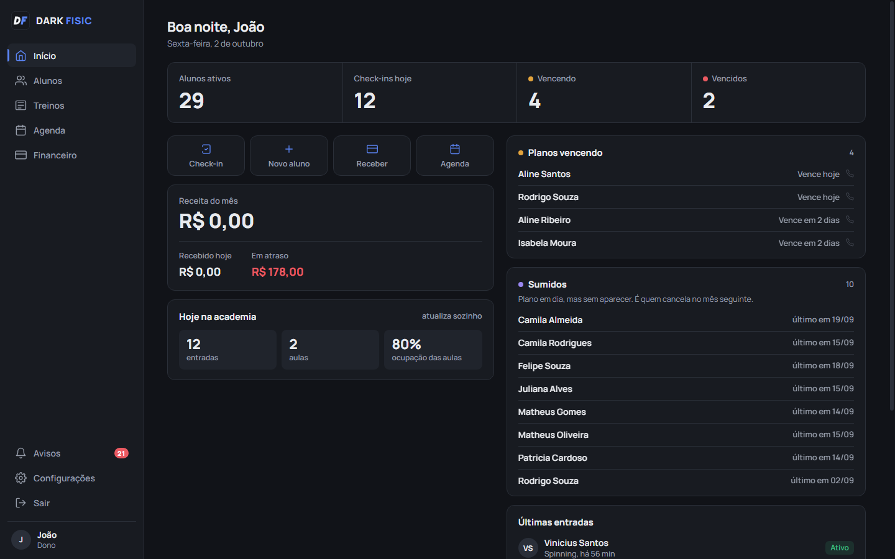
Versão 0.1.1, outubro de 2026. Para o dono e para quem cuida do sistema.
Como funciona
O notebook da academia é o servidor: guarda os dados e atende todos os aparelhos. Não depende de
internet, só do Wi-Fi da academia. Sem Wi-Fi, funciona no próprio notebook.
Notebook da academia
Servidor do sistema, liga junto com o Windows
Banco de dados com tudo da academia
Backup automático todo dia
Painel do servidor: QR code, backup, começar do zero
Wi-Fi
Celulares da equipe
Pelo navegador, com ícone na tela inicial
Outros PCs
Pelo navegador, sem instalar nada
Cada pessoa vê o que precisa
Papel
Vê e faz
Não vê
Dono
Tudo, inclusive receita, preços, equipe, dados da academia e Pix
nada
Recepção
Alunos, check-in, pagamentos, cobranças em aberto, agenda
Receita do mês, inadimplência total, preços, equipe
Professor
Alunos, restrições médicas, avaliações, fichas de treino, agenda
Qualquer valor em dinheiro
As permissões são conferidas no servidor, não só escondidas na tela: mesmo quem souber o endereço
certo não consegue ver o que o papel não permite.
Nenhum aluno é barrado
Plano vencido gera aviso vermelho no check-in, mas a entrada é registrada. A decisão de cobrar fica com a
recepção, com a informação na tela.
DARK FISIC, funcionalidades2
Início
O resumo do dia, que se atualiza sozinho a cada 30 segundos: o que outro aparelho registrou
aparece sem ninguém recarregar. Enquanto os dados chegam, a tela já mostra o formato, sem piscar.
Tela Início vista pelo dono. A recepção vê a mesma tela, sem a caixa de receita.
Placar: alunos ativos, check-ins de hoje, planos vencendo e vencidos, cada um na sua cor
Atalhos: check-in, novo aluno, receber pagamento e agenda
Receita do mês, recebido hoje e valor em atraso (só para o dono)
Hoje na academia: entradas, aulas do dia e ocupação das aulas
Planos vencendo e alunos sumidos, com um clique para abrir o aluno
Últimas entradas do dia
DARK FISIC, funcionalidades3
Alunos e check-in
Lista com busca e a ficha completa do aluno ao lado. O check-in da fila inteira sai só pelo
teclado: / para buscar, setas para escolher, Enter para registrar.
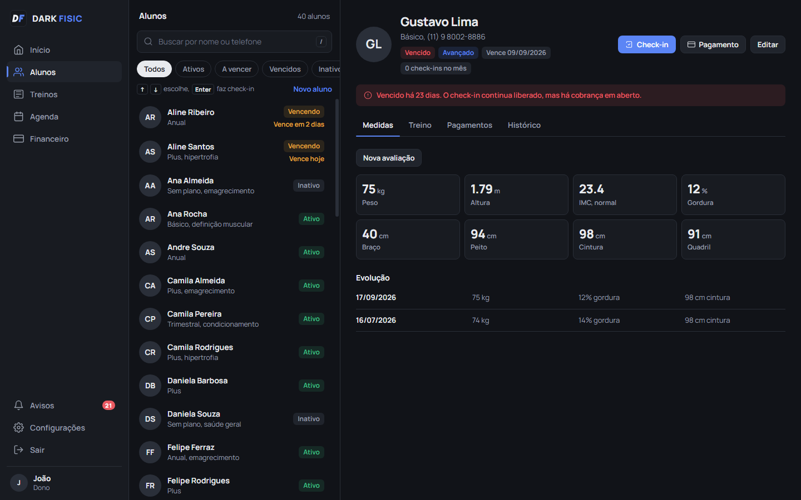
Aluno vencido selecionado: o aviso aparece, mas o check-in continua liberado.
Ativoplano em dia
A vencervence nos próximos dias (prazo ajustável)
Vencidopassou do vencimento
Inativosem matrícula
Situação calculada na hora a partir do vencimento, nunca desatualizada
Filtros: todos, ativos, a vencer, vencidos, inativos
Perfil com medidas, treino, pagamentos e histórico de entradas
Restrições médicas em destaque vermelho no topo do perfil
Confirmação visual: o botão vira "Registrado" em verde e a linha do aluno acende
DARK FISIC, funcionalidades4
Cadastro do aluno
Um formulário só: dados, restrições médicas, plano e primeiro pagamento. O aluno sai do balcão
matriculado.
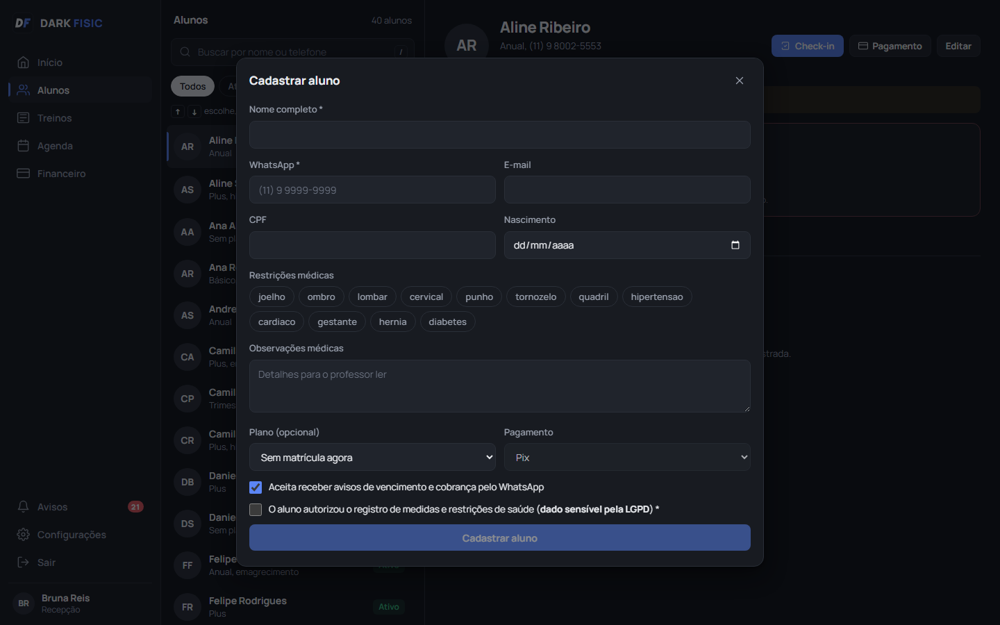
Cadastro com restrições médicas marcadas por toque.
Nome, WhatsApp, e-mail, CPF e nascimento; telefone salvo em formato padrão
Consentimento LGPD e autorização de WhatsApp registrados
Editar dados a qualquer momento
Desativar aluno sem apagar o histórico (só dono e recepção)
DARK FISIC, funcionalidades5
Pagamentos e Pix
Receber, renovar o plano e quitar a cobrança acontecem de uma vez só. No Pix, o aluno escaneia o
QR code direto da tela da recepção, com o valor já preenchido.
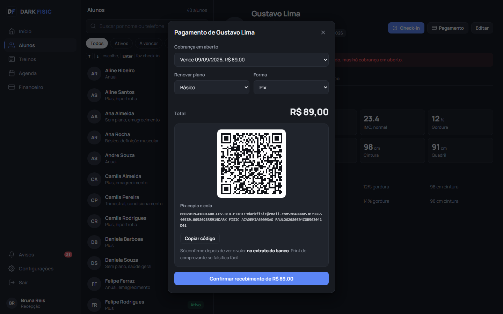
Cobrança em aberto já selecionada, QR code e Pix copia e cola gerados com a chave da academia.
Cobrança automática: quando o plano entra no prazo de aviso, a cobrança do próximo período aparece sozinha
Pix, dinheiro, débito ou crédito
QR code Pix também para renovação antecipada ou plano novo
Pagamento, quitação e renovação gravados juntos: nunca pela metade
Aluno desativado tem as cobranças abertas canceladas
Confirmação do Pix pela recepção, conferindo o extrato do banco
Regra da renovação
Pagou antes ou no diaConta a partir do vencimento antigo: ninguém perde
dias por pagar adiantado. Vencia 10/10, pagou 05/10 → vence 10/11.
Pagou atrasadoConta a partir do dia do pagamento, e o dia de vencimento
passa a ser esse. Vencia 10/10, pagou 20/10 → vence 20/11.
DARK FISIC, funcionalidades6
Financeiro
O dono vê o dinheiro da academia inteira. A recepção vê só o que precisa para receber.
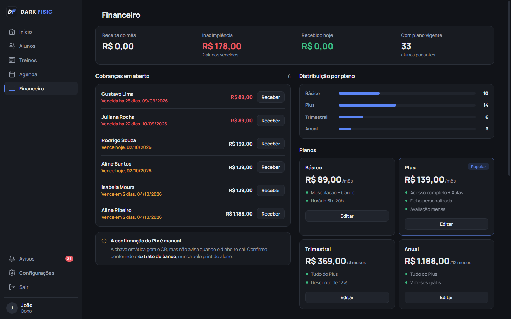
Visão do dono: receita, inadimplência, planos e pagamentos recentes.
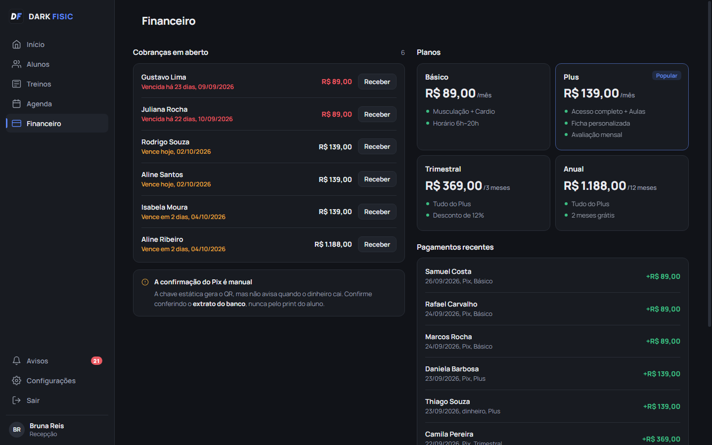
Visão da recepção: cobranças em aberto e pagamentos, sem os totais.
Receita do mês, recebido hoje, inadimplência e alunos com plano vigente
Cobranças em aberto, com botão Receber
Distribuição por plano: quantos alunos em cada um
Editar plano: preço, benefícios e destaque (só o dono); o preço novo vale para as próximas renovações, e quem já pagou mantém o valor
Valores guardados em centavos: nenhum arredondamento some com dinheiro
DARK FISIC, funcionalidades7
Avaliação física
Cada avaliação vira histórico; a anterior nunca é sobrescrita. O perfil do aluno mostra a
evolução ao longo do tempo.
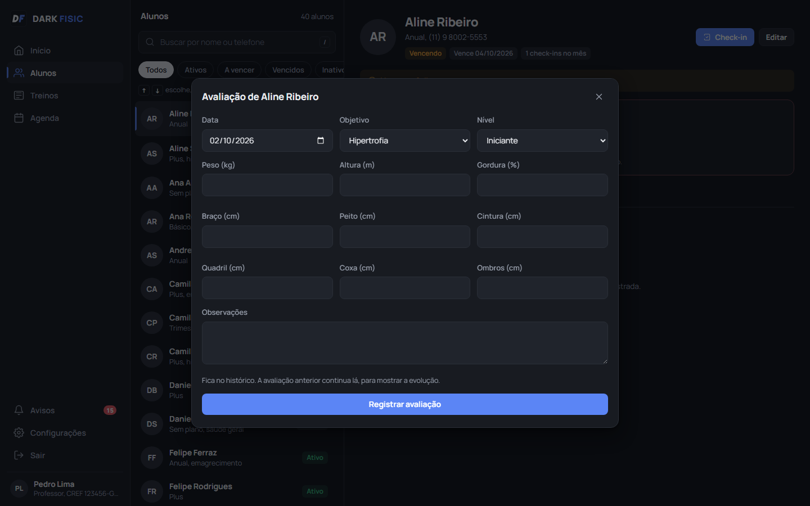
Nova avaliação: objetivo e nível vêm da anterior, para agilizar.
Peso, altura e percentual de gordura, com IMC calculado
Circunferências: braço, peito, cintura, quadril, coxa e ombros
Objetivo (hipertrofia, emagrecimento, definição, condicionamento, saúde geral ou reabilitação) e nível
Observações do professor
Linha de evolução no perfil: peso, gordura e cintura por data
Medida inválida é recusada antes de gravar
DARK FISIC, funcionalidades8
Fichas de treino
O professor monta a ficha com exercícios da biblioteca. Ela nasce como rascunho e só chega ao aluno
quando um professor revisa e libera.
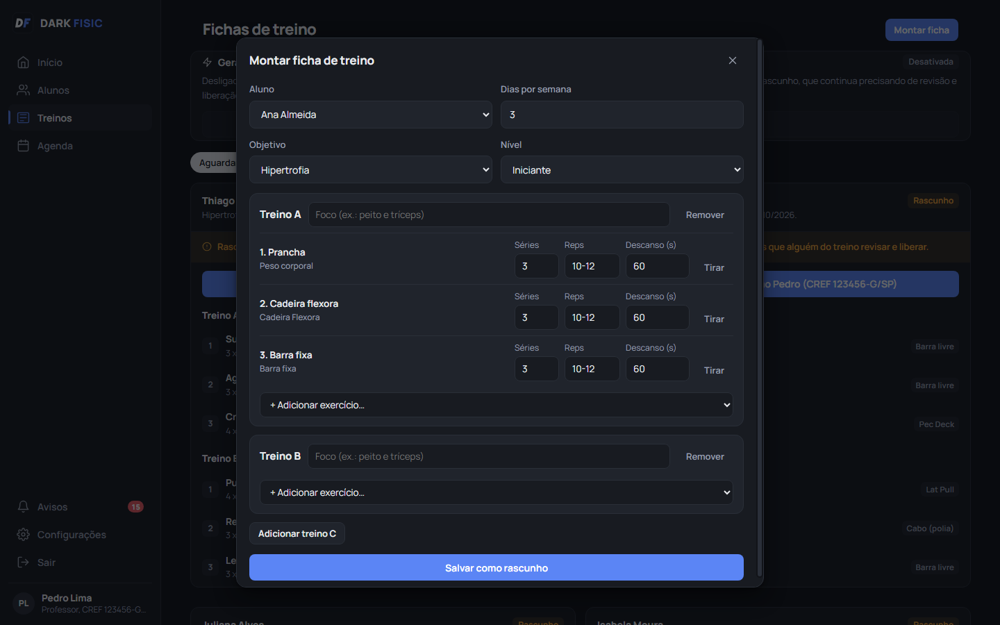
Montar ficha: exercícios contraindicados para as restrições do aluno nem aparecem na lista.
Divisões de A a E, cada uma com foco, séries, repetições e descanso
Biblioteca com 30 exercícios, cada um com grupo muscular, equipamento, nível mínimo e contraindicações
Contraindicação dupla: escondida na tela e recusada pelo servidor
CREF avisa, não bloqueia: a ficha guarda quem liberou e o CREF dessa pessoa, ou a falta dele
Ficha liberada sem CREF aparece em âmbar, com o aviso, em vez do visto verde
Qualquer pessoa da equipe libera; montar a ficha é do professor e do dono
Filtros: aguardando revisão, liberadas e todas
Aviso para o professor quando há rascunho esperando
DARK FISIC, funcionalidades9
Agenda de aulas
Aulas coletivas que se repetem toda semana, com vagas e professor. A recepção inscreve o aluno com
um toque.
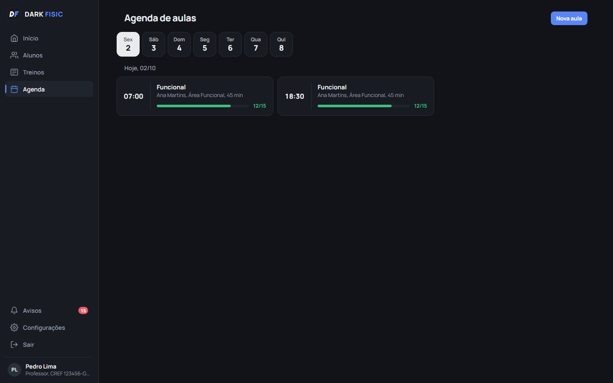
A barra de ocupação muda de cor: verde, amarela acima de 80% e vermelha quando lota.
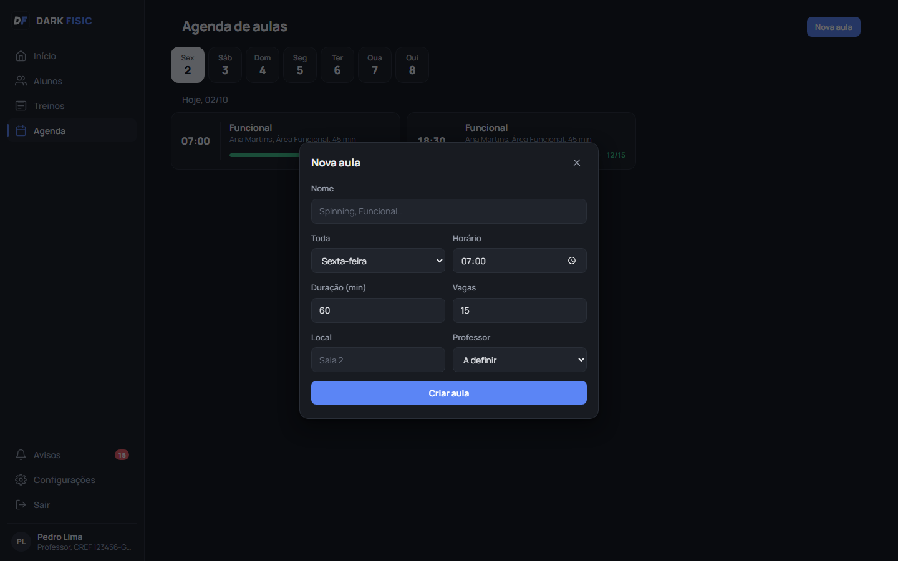
Nova aula: dia da semana, horário, duração, vagas, local e professor.
Navegação pelos dias da semana
Inscrição do aluno na aula do dia, sem passar das vagas
Aula lotada fica bloqueada para novas inscrições
Editar aula: horário, vagas, professor
Ocupação das aulas do dia aparece no Início
DARK FISIC, funcionalidades10
Avisos
O sino lista o que precisa de ação hoje, com um clique para abrir o aluno. Cada papel recebe só os
avisos que lhe cabem.
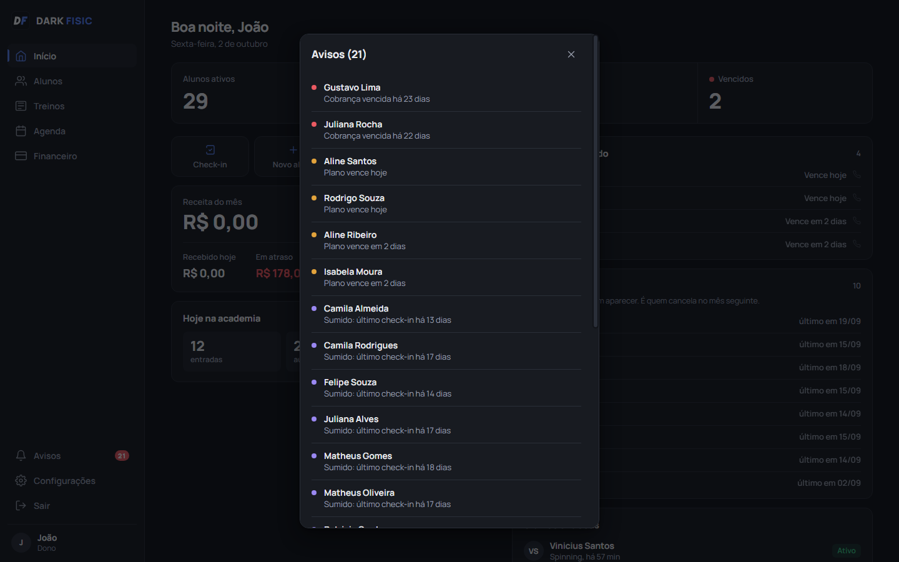
Avisos do dono. O número no sino se atualiza sozinho a cada minuto.
Aviso
Dono
Recepção
Professor
Cobrança vencida, com há quantos dias
sim
sim
não
Plano vencendo, com em quantos dias
sim
sim
não
Aluno sumido há mais dias que o prazo configurado
sim
sim
sim
Ficha em rascunho, esperando liberação
sim
sim
sim
DARK FISIC, funcionalidades11
Configurações e equipe
Tudo o que o dono ajusta sem precisar de ninguém técnico: equipe, senhas, dados da academia,
chave Pix e prazos.
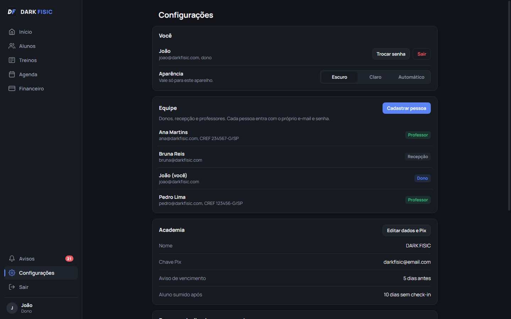
Configurações vistas pelo dono. Recepção e professor veem só a parte "Você".
Equipe: cadastrar pessoa, trocar papel, CREF e especialidade
Redefinir senha de quem esqueceu; bloquear quem saiu (desconecta na hora)
O sistema nunca fica sem nenhum dono ativo
Trocar minha senha: desconecta os outros aparelhos
Dados da academia: nome, CNPJ, telefone, WhatsApp, endereço
Chave Pix validada antes de salvar
Prazos: aviso de vencimento e aluno sumido
Aparência: escuro, claro ou automático, escolhido em cada aparelho
DARK FISIC, funcionalidades12
No celular
O mesmo sistema, arrumado para a tela pequena: menu embaixo, janelas que sobem da parte de baixo e
botões do tamanho do dedo. Não instala nada da loja: abre pelo navegador e fica com ícone na tela inicial.
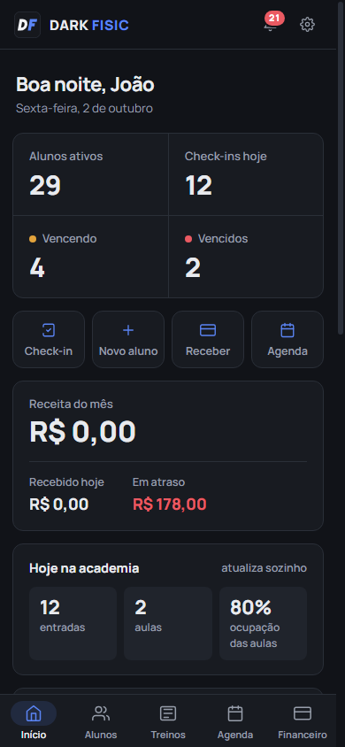
Início
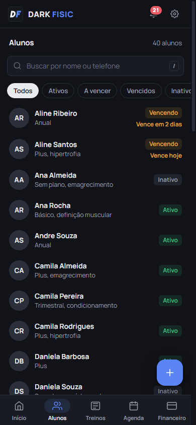
Alunos
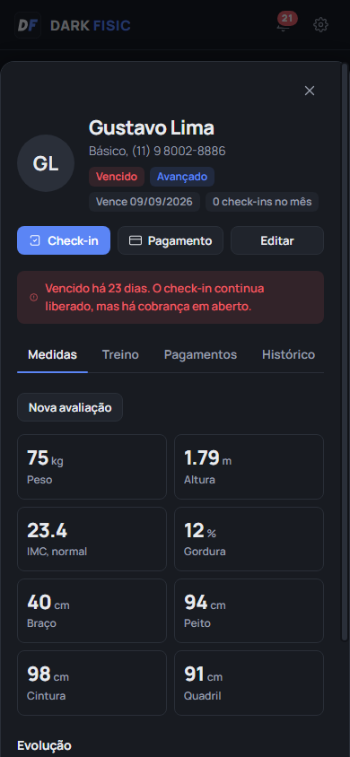
Perfil do aluno
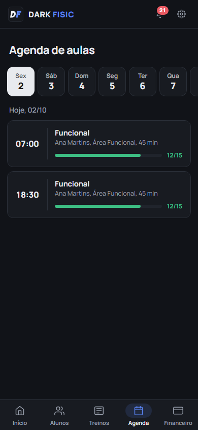
Agenda
Funciona em iPhone (Safari) e Android (Chrome)
Precisa estar no mesmo Wi-Fi do notebook da academia
Cada pessoa entra com o próprio login, com as mesmas permissões do PC
Botão de novo aluno sempre à mão, no canto da tela
Tema claro ou escuro, escolhido no próprio aparelho
Nenhum dado de aluno fica guardado no celular: tudo vem do notebook
DARK FISIC, funcionalidades13
Painel do servidor
A janela que só existe no notebook da academia. É por ela que o sistema liga, mostra o endereço para
os celulares, faz backup e, se precisar, começa do zero.
Em uso: sistema no ar, QR code para os celulares e backups.
Liga sozinho com o Windows e fica no ícone ao lado do relógio
Barra própria na cor do sistema: minimizar, tela cheia e fechar; fechar não desliga
Conta do administrador criada na primeira abertura, sem senha de fábrica
QR code e endereço da rede para os celulares, atualizados sozinhos se a rede mudar
Sem Wi-Fi: avisa que o sistema está funcionando só neste computador
Backup automático todo dia, e um botão para fazer na hora
Demonstração com 40 alunos para treinar a equipe
Começar do zero só depois de digitar APAGAR TUDO, com cópia de segurança que nunca é apagada sozinha
Registro dos últimos eventos, para diagnosticar problemas
DARK FISIC, funcionalidades14
Desligado por enquanto
Duas funções já estão desenhadas e aparecem no sistema, mas ficam desligadas até termos um
veredito. Em Configurações elas aparecem com a chave em "desligado".
Cobrança pelo WhatsAppdesligado
Mensagens automáticas para o aluno, a partir do número da academia.
Aviso de vencimento no prazo configurado
Cobrança com o Pix copia e cola e o valor certo
Envio da ficha liberada, com séries e repetições
Resumo do dia para o dono
O que já está pronto
O cadastro já registra quem aceita receber mensagens, e a cobrança já gera o Pix com o valor.
O ícone do WhatsApp aparece apagado na lista de planos vencendo.
O que falta para ligar
Escolher o provedor da API oficial do WhatsApp Business, um número só para a academia e os modelos
de mensagem aprovados pela Meta. Há custo por conversa.
Ficha de treino por IAdesligado
A IA sugere um rascunho de ficha a partir da avaliação, do objetivo, do nível e das restrições do aluno.
Só usa exercícios da biblioteca da academia
Nunca sugere exercício contraindicado: o servidor recusa
Sai sempre como rascunho
Só chega ao aluno depois que um professor revisa e libera
O que falta para ligar
A revisão da biblioteca pelos dois personal trainers, os limites de volume por nível validados
por eles, e o veredito de vocês sobre usar ou não.
DARK FISIC, funcionalidades15
Segurança e confiabilidade
O sistema guarda dados de saúde e de dinheiro. As proteções abaixo já estão funcionando.
Proteção
Como funciona
Senhas
Guardadas com argon2id, o padrão atual para senhas. Nem quem abre o banco consegue ler.
Mínimo de 10 caracteres.
Sessões
Duram 12 horas. Bloquear uma pessoa ou trocar a senha desconecta os outros aparelhos na hora.
Permissões
Conferidas no servidor em toda ação: recepção não vê receita, professor não vê dinheiro,
montar ficha é de dono e professor.
Registro do CREF
Cada ficha liberada guarda quem liberou e o CREF que a pessoa tinha na hora.
Sem CREF, fica marcada como liberada sem CREF: o sistema avisa, mas não bloqueia (Lei 9.696/1998).
Sem senha de fábrica
A conta do administrador é criada na primeira abertura, com a senha que você escolhe.
Dinheiro
Valores guardados em centavos inteiros. Pagamento, quitação e renovação gravados juntos, nunca pela metade.
Backups
Cópia consistente do banco em uso, todo dia. Guarda 7 diários, 4 semanais e 12 mensais.
Atualizações
Se uma versão nova muda a estrutura do banco, uma cópia é feita antes.
Instalador testado
Todo instalador gerado é ligado num computador "limpo", fora da pasta do projeto,
e só é aprovado se o servidor e o banco subirem.
Celular
Guarda só a casca do app. Dados de alunos e pagamentos nunca ficam gravados no aparelho.
Testes automáticos
156 testes conferem as regras de renovação, cobrança, permissões, fichas e backup a cada mudança.
O ponto fraco hoje
O backup fica no próprio notebook. Até existir a cópia automática fora dele, alguém precisa copiar o backup mais
recente para um pendrive toda semana.
DARK FISIC, funcionalidades16
Próximos passos sugeridos
Em ordem de importância para a academia, considerando risco e esforço.
1
Backup automático fora do notebookCópia criptografada diária para a nuvem (Google Drive ou similar). Tira o risco de perder tudo num roubo ou defeito.
pequeno
2
Acesso de fora da academiaTúnel da Cloudflare com endereço próprio e cadeado (HTTPS). O dono acompanha de casa e o Android instala o app de verdade.
médio
3
Cobrança pelo WhatsAppAviso de vencimento e Pix automáticos. Depende de escolher o provedor e aprovar as mensagens.
médio
4
Confirmação automática do PixCom um provedor de pagamento (Pix com cobrança dinâmica), o sistema sabe na hora que o dinheiro caiu.
Tem taxa por transação.
médio
5
Check-in pelo próprio alunoQR code na entrada: o aluno escaneia com o celular e a recepção fica livre. O sistema já tem o campo de origem do check-in.
pequeno
6
Relatórios para o donoReceita por mês, cancelamentos e horários de pico, com exportação para planilha.
pequeno
7
Ficha por IA e vídeos dos exercíciosDepois do veredito e das gravações feitas na academia.